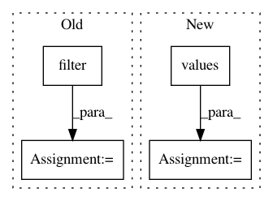

9e9c9c7510b6b50c221cefdde9d30c3b058a2620,server/website/website/models.py,SessionKnobManager,get_knobs_for_session,#Any#,185
Before Change
@staticmethod
def get_knobs_for_session(session):
// Returns a dict of the knob
knobs = KnobCatalog.objects.filter(dbms=session.dbms)
knob_dicts = list(knobs.values())
for i, _ in enumerate(knob_dicts):
if SessionKnob.objects.filter(session=session, knob=knobs[i]).exists():
new_knob = SessionKnob.objects.filter(session=session, knob=knobs[i])[0]
knob_dicts[i]["minval"] = new_knob.minval
knob_dicts[i]["maxval"] = new_knob.maxval
knob_dicts[i]["tunable"] = new_knob.tunable
knob_dicts = [knob for knob in knob_dicts if knob["tunable"]]
return knob_dicts
@staticmethod
def get_knob_min_max_tunability(session, tunable_only=False):
After Change
session_knobs = SessionKnob.objects.filter(
session=session, tunable=True).prefetch_related("knob")
session_knobs = {s.knob.pk: s for s in session_knobs}
knob_dicts = list(KnobCatalog.objects.filter(id__in=session_knobs.keys()).values())
for knob_dict in knob_dicts:
sess_knob = session_knobs[knob_dict["id"]]
knob_dict["minval"] = sess_knob.minval
knob_dict["maxval"] = sess_knob.maxval
knob_dict["tunable"] = sess_knob.tunable
return knob_dicts
@staticmethod
def get_knob_min_max_tunability(session, tunable_only=False):
In pattern: SUPERPATTERN
Frequency: 3
Non-data size: 4
Instances
Project Name: cmu-db/ottertune
Commit Name: 9e9c9c7510b6b50c221cefdde9d30c3b058a2620
Time: 2019-12-05
Author: dvanaken@cs.cmu.edu
File Name: server/website/website/models.py
Class Name: SessionKnobManager
Method Name: get_knobs_for_session
Project Name: Scitator/catalyst
Commit Name: aab3902d4a7d55f5a86058854adc36b8a12c873f
Time: 2019-05-20
Author: ekhvedchenya@gmail.com
File Name: catalyst/dl/callbacks/base.py
Class Name: OptimizerCallback
Method Name: on_batch_end